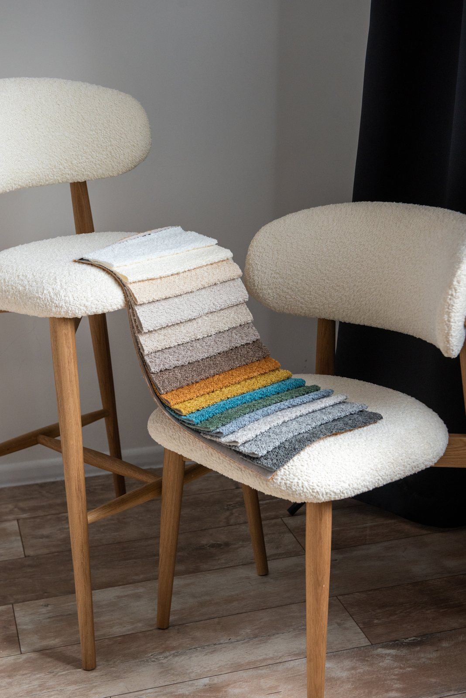

Найдите фактуру
Сравните ткани по внешнему виду и характеристикам. Откройте несколько коллекций.
Fabric’s / Текстильная мозаика
Мебельные ткани, которые складываются в ваш интерьер. Выберите фактуру, рассмотрите оттенки и соберите свою подборку.
01 / НАЙТИ СВОЮ ФАКТУРУ
От спокойного букле до выразительного рисунка. Откройте коллекцию и выберите оттенки.
Таких коллекций в подборке нет. Попробуйте другое название или выберите «Все».

02 / МАТЕРИАЛ В ЖИЗНИ
На экране можно рассмотреть переплетение и сравнить оттенки. Образец поможет почувствовать мягкость ткани и увидеть цвет при вашем освещении.
Соберите понравившиеся оттенки в подборку — её удобно взять на встречу с консультантом.
03 / ОТ ИДЕИ К ВАШЕЙ МЕБЕЛИ
Образцы коллекций можно посмотреть у дилеров Fabric’s в разных областях Беларуси.
Сравните ткани по внешнему виду и характеристикам. Откройте несколько коллекций.
Добавьте подходящие образцы в подборку и скопируйте список для консультанта.
Уточните у команды, где посмотреть выбранные образцы и как оформить заказ.
Связаться с Fabric’s ↗